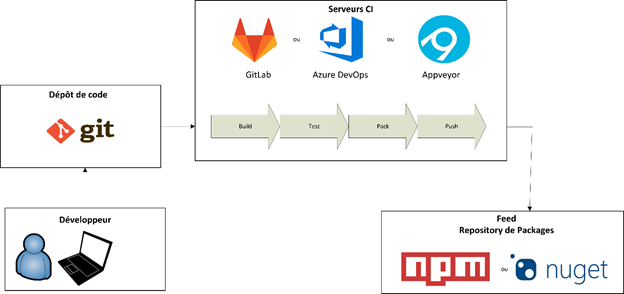

Outils d’Intégration Continue
Le principe de Continious Integration (CI), intégration continue en francais, est de souvent intégrer les changements des développeurs dans la base de code d’un produit.Il est courant de rajouter un « Serveur de CI » qui va surveiller les changements sur le dépôt de code et exécuter un script pour vérifier les changements.
Pendants 6 mois, j’ai travaillé sur la CI de Signature Code, et j'ai pus me familiariser avec différents outils sont utilisés lors de notre cycle DevOps : 
NPM & JavaScript/TypeScript
Le gestionnaire de paquet de JavaScript le plus populaire est Node Package Manager (NPM), il est plus commun de l’appeler par son acronyme.Nous avons rencontré de nombreuses difficultés dans l’utilisation de NPM, principalement causées par que npm n’est pas conçu pour être piloté par être outil, ce qui rend l'utilisation de npm tortueuse. Par exemple, il est impossible de donner un mot de passe à NPM sans l’inscrire dans un fichier, fichier qui est normalement publié par le développeur.
Cette pratique est un trou de sécurité et créer continuellement des nouvelles brèches de sécurité.
NuGet
NuGet est un gestionnaire de paquets développé par Microsoft, il est surtout utilisé sur la plateforme .NET.Un paquet est une archive contenant divers fichiers. Dans le cas de NuGet, les packages contiennent le plus souvent des composants réutilisable.
Un gestionnaire de paquets automatise les tâches liées au paquet, comme l’installation ou la mise à niveau.
Les paquets sont stockés dans un dépôt de paquets, et les gestionnaires de paquets sont souvent capables de télécharger automatiquement les paquets à partir de son nom et de sa version.